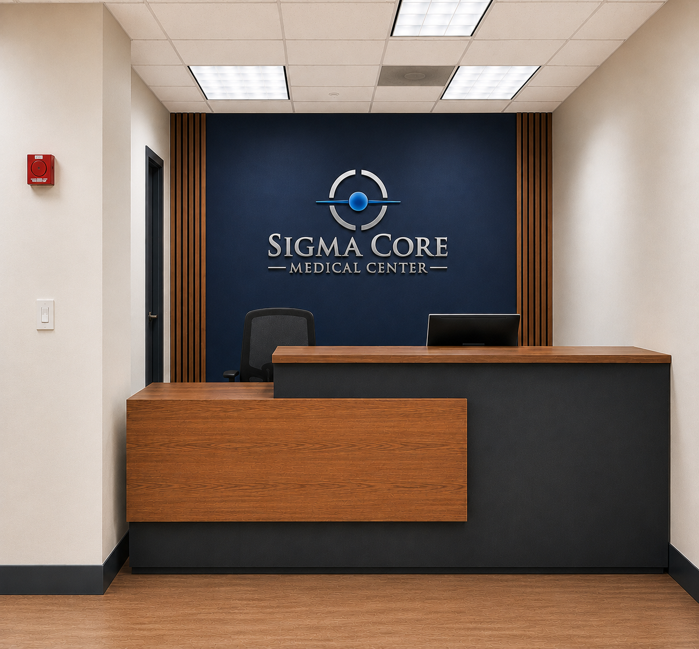
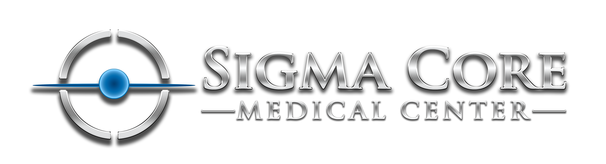
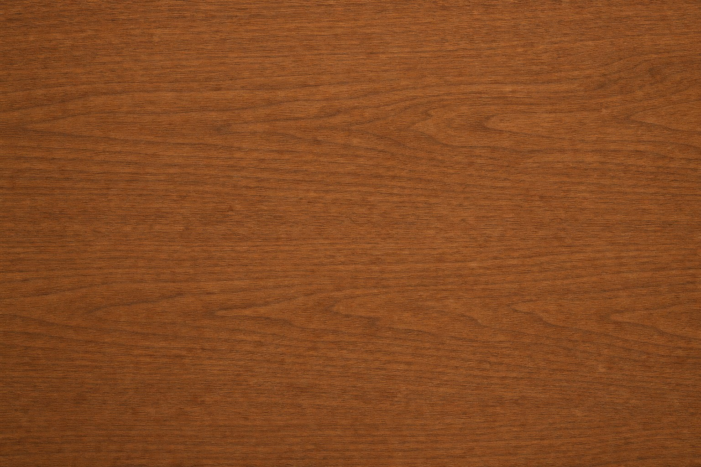
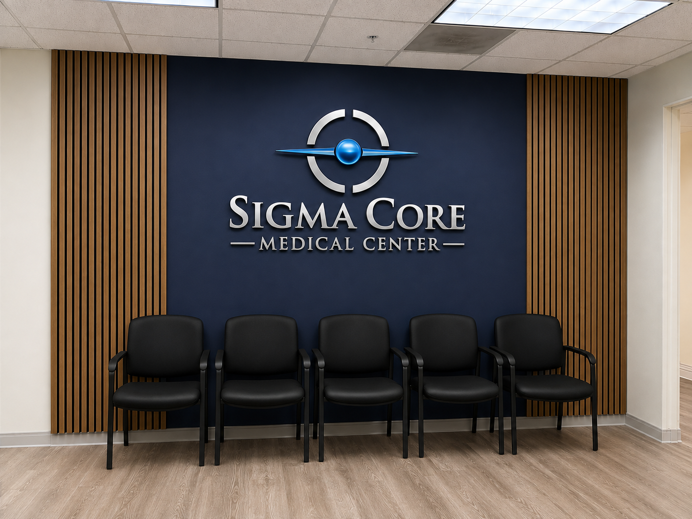
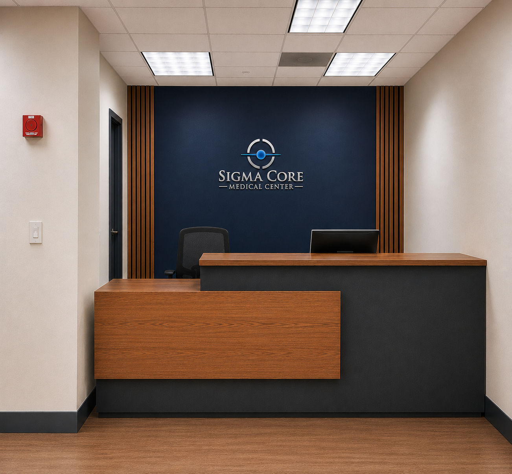

Sigma Core — Direction B (code-native) asset review
38 CODE regions and 10 raster assets to review: 4 extract, 5 inpaint.
How to review: judge every planned treatment against its design reference on the left. For CODE cards, verify the build note can preserve the region's silhouette, materiality, and compositing—not merely approximate its geometry. To swap a raster, replace the file directly in git — same path, push to main. Replaced files are authoritative — the pipeline never overwrites them. This page updates on every push. Complete the review subtask to approve; the build does not start until then.
01-movement-forward-r1code
Hero section scaffold: full-bleed ink field, left text column, ghost 'MOVEMENT' display word, bottom charcoal caption band, and angled blue geometric shapes at bottom-right. Segmenter merged the whole hero; the clinic photograph inside this box is split out as sub-asset 1b.
CSS grid hero on ink #101E33 (comp bg #041C34 is an opacity-darkened ink; use ink token at full strength). Left column ~48% width, 8px rhythm. Ghost word 'MOVEMENT' is live text: display role (Playfair Display 600), uppercase, ~160px, color light #FFFFFF at 6-8% opacity, letter-spacing -0.02em, positioned absolute behind the copy column, overflow hidden. Bottom band: charcoal #20272E block ~140px tall. Bottom-right stepped accents: 3-4 absolutely-positioned rects in action #0666A5 and electric #0877BE (electric non-text only), widths 40-180px, translated in 8px steps like the core-horizon motif family. Electric 2px horizon rule aligned to last headline baseline per typography_contract ornament 'core-horizon' (32% container width desktop, 42% of text column mobile).
design reference — 01-movement-forward (click for full frame)
Planned code treatment
CSS grid hero on ink #101E33 (comp bg #041C34 is an opacity-darkened ink; use ink token at full strength). Left column ~48% width, 8px rhythm. Ghost word 'MOVEMENT' is live text: display role (Playfair Display 600), uppercase, ~160px, color light #FFFFFF at 6-8% opacity, letter-spacing -0.02em, positioned absolute behind the copy column, overflow hidden. Bottom band: charcoal #20272E block ~140px tall. Bottom-right stepped accents: 3-4 absolutely-positioned rects in action #0666A5 and electric #0877BE (electric non-text only), widths 40-180px, translated in 8px steps like the core-horizon motif family. Electric 2px horizon rule aligned to last headline baseline per typography_contract ornament 'core-horizon' (32% container width desktop, 42% of text column mobile).
No raster file. Reject this verdict if simple CSS/SVG cannot preserve the reference-specific visual identity.
01-movement-forward-r1binpaint
Clinic reception photograph (navy feature wall with dimensional Sigma Core wall sign, walnut reception desk, charcoal desk face, ceiling and warm mineral walls) occupying the hero's right half. Occluded by the body-copy panel corner (region 2), caption typography (regions 4/6 family), the charcoal caption band, and the blue stepped accent rects at bottom-right.
Fidelity drivers: real facility proof — walnut desk grain, brushed-metal wall sign specularity, natural interior lighting. Inpaint away overlapping navy panels, blue rects, and caption text to recover a clean full rectangle; UI overlays are rebuilt in code on top. RESOLVED WITHOUT INPAINT — the supplied reception-1.png IS the clean source photo; the comp's panels/caption/accent rects are code layers on top of it. Exact client copy, crop via object-fit only.
presentation: {"alpha_required": false, "crop_contract": "Reception desk front, the navy feature wall, and the complete Sigma Core wall sign must remain visible at desktop; on mobile keep the wall sign and desk top edge in frame (sign never cropped).", "intended_background": "#041C34", "minimum_visible_fraction": "70% of asset width desktop, 55% mobile; wall sign 100% visible at all breakpoints", "mode": "full-bleed"}
design reference — 01-movement-forward (click for full frame)

shipped asset on transparency checkerboard — shared/reception-1.png (replace in git)asset on intended background — #041C34
01-movement-forward-r2code
Hero body-copy panel plus stacked CTA group: intro paragraph on a lighter navy panel, 'Book an Appointment' primary CTA, 'Explore Neuropathy Care' secondary CTA.
Panel: ink #101E33 lightened via light #FFFFFF at ~6% overlay, 1px silver #C7CBD0 at 30% top keyline, 32px padding. Body role (Source Sans 3 400) 18px/1.6 in light #FFFFFF, 3 desktop lines. Primary CTA: action #0666A5 fill, light #FFFFFF utility role 600 label 18px, 14px vertical padding, small electric square glyph at left, hover #054F80, focus ring 2px #72C7F3; type='button' with validate-first requestSubmit pattern. Secondary CTA: transparent with 1px light-at-30% border, light label, right chevron arrow (lucide chevron-right 20px), same hover/focus tokens.
design reference — 01-movement-forward (click for full frame)
Planned code treatment
Panel: ink #101E33 lightened via light #FFFFFF at ~6% overlay, 1px silver #C7CBD0 at 30% top keyline, 32px padding. Body role (Source Sans 3 400) 18px/1.6 in light #FFFFFF, 3 desktop lines. Primary CTA: action #0666A5 fill, light #FFFFFF utility role 600 label 18px, 14px vertical padding, small electric square glyph at left, hover #054F80, focus ring 2px #72C7F3; type='button' with validate-first requestSubmit pattern. Secondary CTA: transparent with 1px light-at-30% border, light label, right chevron arrow (lucide chevron-right 20px), same hover/focus tokens.
No raster file. Reject this verdict if simple CSS/SVG cannot preserve the reference-specific visual identity.
01-movement-forward-r3inpaint
Fragment of the reception photograph: the dimensional Sigma Core Medical Center wall sign on the navy feature wall. Same physical photo as asset 1b, shattered by the segmenter.
Not a separate composited logo — perspective, wall shadow, and metallic specular highlights are in-scene. Keep within the single merged photo extraction; do not cut out separately. Merged into asset 1b (shared/reception-1.png); in-scene signage ships only inside the authentic photo.
presentation: {"alpha_required": false, "crop_contract": "Ships only as part of merged asset 1b; entire sign lockup must remain legible inside the photo crop at all breakpoints.", "intended_background": "#041C34", "minimum_visible_fraction": "100% of the sign within the parent photo crop", "mode": "full-bleed"}
design reference — 01-movement-forward (click for full frame)shipped asset on transparency checkerboard — shared/reception-1.png (replace in git)asset on intended background — #041C34
01-movement-forward-r4code
Photo caption pair on the charcoal band: italic 'Human Performance and Longevity' plus tracked-caps 'RICHMOND, VIRGINIA AREA'.
Live HTML on charcoal #20272E band (light-on-charcoal relationship, min contrast 7). Line 1: display family (Playfair Display) 600 italic ~22px, light #FFFFFF. Line 2: utility role (Source Sans 3 600) 13px uppercase, letter-spacing 0.18em, electric #0877BE used only as this short non-body accent; small electric square marker 8px preceding line 1.
design reference — 01-movement-forward (click for full frame)
Planned code treatment
Live HTML on charcoal #20272E band (light-on-charcoal relationship, min contrast 7). Line 1: display family (Playfair Display) 600 italic ~22px, light #FFFFFF. Line 2: utility role (Source Sans 3 600) 13px uppercase, letter-spacing 0.18em, electric #0877BE used only as this short non-body accent; small electric square marker 8px preceding line 1.
No raster file. Reject this verdict if simple CSS/SVG cannot preserve the reference-specific visual identity.
01-movement-forward-r5extract
Header brand wordmark: 'SIGMA CORE / MEDICAL CENTER' in brushed-silver engraved letterforms with flanking rules — supplied dimensional logo lettering, not live type.
Fidelity drivers: brushed-silver material gradient in the letterforms and pale cyan edge highlights that palette_contract locks to the supplied logo (metallic treatment forbidden elsewhere). Source from brand-assets logo file rather than re-cutting from the comp if the supplied raster matches. CLIENT ORIGINAL — supplied logo lockup (logo-3.png) copied as-is with alpha; single header lockup with region 7.
presentation: {"alpha_required": true, "crop_contract": "Complete lockup (mark + wordmark + MEDICAL CENTER line and rules) legible at rendered header size ~370px wide desktop, ~240px mobile; lettering and mark separately legible on ink.", "intended_background": "#041C34", "minimum_visible_fraction": "100% at all breakpoints", "mode": "transparent-cutout"}
design reference — 01-movement-forward (click for full frame)

shipped asset on transparency checkerboard — shared/logo.png (replace in git)asset on intended background — #041C34
01-movement-forward-r6code
Eyebrow line above the H1: 'PERSONALIZED CARE IN THE RICHMOND AREA' in tracked caps.
Utility role (Source Sans 3 600) 13px uppercase, letter-spacing 0.2em, color focus-blue family readable on ink — use #72C7F3 (focus token as small non-text-critical accent) or light at 80%; sits 24px above H1 (display role, Playfair 600, 3 desktop lines / 5 mobile per line-break invariants).
design reference — 01-movement-forward (click for full frame)
Planned code treatment
Utility role (Source Sans 3 600) 13px uppercase, letter-spacing 0.2em, color focus-blue family readable on ink — use #72C7F3 (focus token as small non-text-critical accent) or light at 80%; sits 24px above H1 (display role, Playfair 600, 3 desktop lines / 5 mobile per line-break invariants).
No raster file. Reject this verdict if simple CSS/SVG cannot preserve the reference-specific visual identity.
01-movement-forward-r7extract
Header core emblem: dimensional metallic ring with blue orb center and crosshair segments — the supplied logo's rendered 3D mark.
Fidelity drivers: glossy blue orb specular highlight, silver ring bevel, soft drop shadow — dimensional metallic artwork whose identity is material. Same asset family as region 5; ship as one header lockup cutout. Merged with region 5 into the single supplied lockup asset shared/logo.png.
presentation: {"alpha_required": true, "crop_contract": "Full circular mark uncropped with its highlight intact; renders ~80px desktop, ~56px mobile.", "intended_background": "#041C34", "minimum_visible_fraction": "100% at all breakpoints", "mode": "transparent-cutout"}
design reference — 01-movement-forward (click for full frame)shipped asset on transparency checkerboard — shared/logo.png (replace in git)asset on intended background — #041C34
02-neuropathy-first-r1code
Stepped three-panel orientation sequence ('Understand your goals' navy, 'Discuss appropriate options' charcoal, 'Choose an informed next step' mineral paper), each with a squared corner bracket, plus a large angled electric-blue field carrying the 'Explore Neuropathy Care' CTA.
Operator policy: stacked panels + material fields are CODE. Three offset flex rows stepped right-to-left by ~96px each, panel fills: ink #101E33, charcoal #20272E, surface #F7F6F3; each gets an SVG feTurbulence fractalNoise (baseFrequency 0.9, opacity 0.04) grain overlay for paper/plaster materiality. Squared brackets: 24px CSS pseudo-elements, 2px borders (border-top+border-left only), silver #C7CBD0 on dark panels / ink on light panel. Panel titles utility role 600 20px, body 16/1.6 muted #55616A on the light panel, light #FFFFFF on dark. Blue field: clip-path polygon triangle/trapezoid in action #0666A5 (carries white CTA label, so darkened action not electric); CTA 'Explore Neuropathy Care →' utility 600 with lucide arrow-right, hover #054F80, focus 2px #72C7F3. Frame ornament 'partial-core-arc': cropped 2px silver arc from outer gutter per typography contract.
design reference — 02-neuropathy-first (click for full frame)
Planned code treatment
Operator policy: stacked panels + material fields are CODE. Three offset flex rows stepped right-to-left by ~96px each, panel fills: ink #101E33, charcoal #20272E, surface #F7F6F3; each gets an SVG feTurbulence fractalNoise (baseFrequency 0.9, opacity 0.04) grain overlay for paper/plaster materiality. Squared brackets: 24px CSS pseudo-elements, 2px borders (border-top+border-left only), silver #C7CBD0 on dark panels / ink on light panel. Panel titles utility role 600 20px, body 16/1.6 muted #55616A on the light panel, light #FFFFFF on dark. Blue field: clip-path polygon triangle/trapezoid in action #0666A5 (carries white CTA label, so darkened action not electric); CTA 'Explore Neuropathy Care →' utility 600 with lucide arrow-right, hover #054F80, focus 2px #72C7F3. Frame ornament 'partial-core-arc': cropped 2px silver arc from outer gutter per typography contract.
No raster file. Reject this verdict if simple CSS/SVG cannot preserve the reference-specific visual identity.
02-neuropathy-first-r2code
Section header block: 'Neuropathy care' eyebrow, H1 'A clearer next step when neuropathy is limiting your day', and intro paragraph.
Eyebrow utility role 600 14px, color #72C7F3-adjacent accent — use focus token or light 70% on the near-ink bg; H1 display role Playfair Display 600 ~44px/1.15, light #FFFFFF, 3 desktop lines / 5 mobile per invariant; body role 18px/1.6 light at 85%, 3 desktop lines, max-width ~46ch.
design reference — 02-neuropathy-first (click for full frame)
Planned code treatment
Eyebrow utility role 600 14px, color #72C7F3-adjacent accent — use focus token or light 70% on the near-ink bg; H1 display role Playfair Display 600 ~44px/1.15, light #FFFFFF, 3 desktop lines / 5 mobile per invariant; body role 18px/1.6 light at 85%, 3 desktop lines, max-width ~46ch.
No raster file. Reject this verdict if simple CSS/SVG cannot preserve the reference-specific visual identity.
02-neuropathy-first-r3code
Top-right stepped signal-bar motif: descending horizontal electric-blue bars of decreasing width bleeding off the right edge.
Operator policy: stepped signal bars are CODE. Flex column of 5-6 divs, height 10px, gap 10px, widths stepping 320px down to 60px, right-aligned to viewport edge, fills alternating electric #0877BE and action #0666A5 (non-text emphasis role), no border-radius; hide below 768px or shrink to 3 bars.
design reference — 02-neuropathy-first (click for full frame)
Planned code treatment
Operator policy: stepped signal bars are CODE. Flex column of 5-6 divs, height 10px, gap 10px, widths stepping 320px down to 60px, right-aligned to viewport edge, fills alternating electric #0877BE and action #0666A5 (non-text emphasis role), no border-radius; hide below 768px or shrink to 3 bars.
No raster file. Reject this verdict if simple CSS/SVG cannot preserve the reference-specific visual identity.
02-neuropathy-first-r4code
Compliance disclaimer line: 'No cure or reversal is promised.' in italic serif on a light chip.
Live HTML: display family italic (Playfair Display 500 italic) 16px, ink #101E33 on a surface #F7F6F3 chip with 6px 12px padding — honest-claims line kept visible, min contrast 7 relationship.
design reference — 02-neuropathy-first (click for full frame)
Planned code treatment
Live HTML: display family italic (Playfair Display 500 italic) 16px, ink #101E33 on a surface #F7F6F3 chip with 6px 12px padding — honest-claims line kept visible, min contrast 7 relationship.
No raster file. Reject this verdict if simple CSS/SVG cannot preserve the reference-specific visual identity.
03-care-constellation-r1code
Service constellation scaffold on the warm mineral field: H1 'Care organized around what you want to keep doing', the enlarged primary 'Neuropathy' node in action blue with white copy and chevron, ghost 'CARE' display letters behind the headline, thin blue registration line, and the offset service-panel composition. The walnut wood sliver at the far right is split out as sub-asset 1b.
Section bg surface-warm #FCF4EC (comp-derived warm variant of surface #F7F6F3; token surface with a warm overlay is acceptable — no new palette family). H1 display role Playfair 600 ~48px ink #101E33, 2 desktop lines. Primary node: action #0666A5 rect ~560x150px, title display 600 32px light #FFFFFF, body 16/1.5 light 85%, right chevron, 2px electric #0877BE registration rule ('service-registration' ornament, 58% container width, thickness 2px) leading into it; hover #054F80. Ghost letters are live text (see regions 4-5). Subtle grain: SVG feTurbulence overlay opacity 0.03 across the mineral field.
design reference — 03-care-constellation (click for full frame)
Planned code treatment
Section bg surface-warm #FCF4EC (comp-derived warm variant of surface #F7F6F3; token surface with a warm overlay is acceptable — no new palette family). H1 display role Playfair 600 ~48px ink #101E33, 2 desktop lines. Primary node: action #0666A5 rect ~560x150px, title display 600 32px light #FFFFFF, body 16/1.5 light 85%, right chevron, 2px electric #0877BE registration rule ('service-registration' ornament, 58% container width, thickness 2px) leading into it; hover #054F80. Ghost letters are live text (see regions 4-5). Subtle grain: SVG feTurbulence overlay opacity 0.03 across the mineral field.
No raster file. Reject this verdict if simple CSS/SVG cannot preserve the reference-specific visual identity.
03-care-constellation-r1binpaint
Vertical photographic walnut wood-grain plank at the right edge of the 'Regenerative medicine' panel; the charcoal panel overlaps it creating a stepped seam, so the clean plank must be recovered.
Fidelity drivers: real walnut grain figure and warm variation (palette token walnut #9A572B is its flat companion; photographic wood grain is a permitted raster modality). Inpaint the charcoal-panel occlusion to yield one continuous vertical plank; the step is re-created by the CSS panel overlapping the image in the build. RESOLVED AS MATERIAL PLATE — a full-frame walnut surface photo generated via gen_image edits from crops of the supplied clinic wood (reception-1 slats + desk), not extracted from the comp. Rotate 90deg in CSS for vertical grain; the charcoal panel overlap is a code layer, so no inpainting is needed.
presentation: {"alpha_required": false, "crop_contract": "Continuous vertical grain with no visible tiling seam, tall enough to bleed past the panel's top and bottom edges at desktop; on mobile it may shrink to a 24px accent strip but grain direction stays vertical.", "intended_background": "#FCF4EC", "minimum_visible_fraction": "A 24px-wide strip minimum at all breakpoints", "mode": "full-bleed"}
design reference — 03-care-constellation (click for full frame)

shipped asset on transparency checkerboard — variant-b/walnut-texture.jpg (replace in git)asset on intended background — #FCF4EC
03-care-constellation-r2code
Upper service panels: 'Pain and mobility' paper card and 'Hormone optimization' charcoal card, offset diagonally, each with a squared corner bracket and short summary copy.
Operator policy: plain material fields + brackets are CODE. Paper card: surface #F7F6F3 with feTurbulence grain at 0.04 opacity, title utility 600 18px ink #101E33, body 15/1.5 muted #55616A, layered soft shadow 0 8px 24px rgb(16 30 51 / 0.08). Charcoal card: #20272E, light #FFFFFF title, light 80% body, silver #C7CBD0 2px corner bracket (24px arms, top-right). Offset composition via CSS grid with row/column offsets in 8px multiples — not an equal card grid.
design reference — 03-care-constellation (click for full frame)
Planned code treatment
Operator policy: plain material fields + brackets are CODE. Paper card: surface #F7F6F3 with feTurbulence grain at 0.04 opacity, title utility 600 18px ink #101E33, body 15/1.5 muted #55616A, layered soft shadow 0 8px 24px rgb(16 30 51 / 0.08). Charcoal card: #20272E, light #FFFFFF title, light 80% body, silver #C7CBD0 2px corner bracket (24px arms, top-right). Offset composition via CSS grid with row/column offsets in 8px multiples — not an equal card grid.
No raster file. Reject this verdict if simple CSS/SVG cannot preserve the reference-specific visual identity.
03-care-constellation-r3code
Closing copy block 'Brief, benefit-led pathways help you find the right conversation without publishing protocols or promising a result.' plus 'Explore All Services' navy CTA bar.
Body role 18/1.6 ink #101E33 max-width 40ch; CTA: full-width-of-column ink #101E33 bar, utility 600 18px light #FFFFFF label with lucide arrow-right, 16px vertical padding, hover deepens toward charcoal via 10% black overlay, focus ring 2px #72C7F3; type='button' + requestSubmit pattern if it ever fronts a form.
design reference — 03-care-constellation (click for full frame)
Planned code treatment
Body role 18/1.6 ink #101E33 max-width 40ch; CTA: full-width-of-column ink #101E33 bar, utility 600 18px light #FFFFFF label with lucide arrow-right, 16px vertical padding, hover deepens toward charcoal via 10% black overlay, focus ring 2px #72C7F3; type='button' + requestSubmit pattern if it ever fronts a form.
No raster file. Reject this verdict if simple CSS/SVG cannot preserve the reference-specific visual identity.
03-care-constellation-r4code
Ghost display letterform fragment (part of oversized 'CARE' watermark behind the section top).
Ghost display typography is CODE: one live-text element 'CARE', display role Playfair 600 ~220px uppercase, color ink #101E33 at 5% opacity, absolute-positioned behind the H1, overflow hidden, aria-hidden='true'. Regions 4 and 5 are fragments of this single element.
design reference — 03-care-constellation (click for full frame)
Planned code treatment
Ghost display typography is CODE: one live-text element 'CARE', display role Playfair 600 ~220px uppercase, color ink #101E33 at 5% opacity, absolute-positioned behind the H1, overflow hidden, aria-hidden='true'. Regions 4 and 5 are fragments of this single element.
No raster file. Reject this verdict if simple CSS/SVG cannot preserve the reference-specific visual identity.
03-care-constellation-r5code
Second fragment of the same ghost 'CARE' watermark letterforms.
Same single live-text ghost element as region 4 — do not build twice; one absolutely positioned span styled per region 4's recipe.
design reference — 03-care-constellation (click for full frame)
Planned code treatment
Same single live-text ghost element as region 4 — do not build twice; one absolutely positioned span styled per region 4's recipe.
No raster file. Reject this verdict if simple CSS/SVG cannot preserve the reference-specific visual identity.
04-place-of-care-r1extract
Waiting-room photograph: navy feature wall with dimensional Sigma Core wall sign, walnut vertical slats, charcoal seating row, warm mineral walls and wood platform. Occluded by the bottom-left charcoal caption wedge (sub 1b) and the framed metallic emblem panel at the right edge (sub 1c).
AUTHENTICITY OVERRIDE (replaces the raw inpaint verdict): the ref widens the waiting room into a generated composite (extra seats, platform foreground) matching no supplied original; fabricating facility imagery is prohibited. Build the slot from the authentic shared/waiting-room.png via object-fit: cover — the caption wedge (1b) and emblem panel (1c) are code/asset layers ON TOP, so no facility pixels are inpainted. The ref's wider composite is approximated by the crop, not regenerated.
presentation: {"alpha_required": false, "crop_contract": "Navy wall with complete wall sign, at least three seats, and a run of walnut slats visible at desktop; mobile crop keeps the sign and slats, may drop the platform foreground.", "intended_background": "#141C24", "minimum_visible_fraction": "75% desktop, 55% mobile; wall sign 100% visible always", "mode": "full-bleed"}
design reference — 04-place-of-care (click for full frame)

shipped asset on transparency checkerboard — shared/waiting-room.png (replace in git)asset on intended background — #141C24
04-place-of-care-r1bcode
Charcoal angled caption wedge over the photo's lower-left: silver squared bracket, 'Opening target:' label, 'September 8, 2026' in focus blue, and 'Sigma Core Medical Center, Richmond area' caption.
clip-path polygon wedge in charcoal #20272E at ~96% opacity over the photo, 32px padding; silver #C7CBD0 squared bracket 2px, ~48px arms at left ('silver-facility-keyline' family, thickness 1-2px). 'Opening target:' utility 600 14px light #FFFFFF; date utility 600 24px in #72C7F3 (focus token as small accent surface text); caption body 400 14px light 75%; short 2px electric underline rule 32px wide between date and caption.
design reference — 04-place-of-care (click for full frame)
Planned code treatment
clip-path polygon wedge in charcoal #20272E at ~96% opacity over the photo, 32px padding; silver #C7CBD0 squared bracket 2px, ~48px arms at left ('silver-facility-keyline' family, thickness 1-2px). 'Opening target:' utility 600 14px light #FFFFFF; date utility 600 24px in #72C7F3 (focus token as small accent surface text); caption body 400 14px light 75%; short 2px electric underline rule 32px wide between date and caption.
No raster file. Reject this verdict if simple CSS/SVG cannot preserve the reference-specific visual identity.
04-place-of-care-r1cextract
Dimensional metallic core emblem (segmented silver ring, glossy blue orb, horizontal blue blade) mounted in a small navy framed square straddling the photo's right edge.
Fidelity drivers: rendered metal bevel, orb specular highlight, blade gradient — the supplied logo's 3D mark, forbidden to fake with CSS chrome per brand constraints. Extract the mark alone as a cutout; the navy square mount is CODE: ink #101E33 panel with 1px silver #C7CBD0 border, 24px padding, layered shadow 0 12px 32px rgb(0 0 0 / 0.35). EXACT-PIXEL WINDOW of the supplied logo lockup's core mark (alpha preserved, zero repainting) — cut from shared/logo.png, never re-rendered. The navy framed mount is CODE.
presentation: {"alpha_required": true, "crop_contract": "Full ring and blade uncropped inside its framed panel (~150px square render); on mobile the panel may relocate below the photo but the mark stays complete.", "intended_background": "#101E33", "minimum_visible_fraction": "100% at all breakpoints", "mode": "transparent-cutout"}
design reference — 04-place-of-care (click for full frame)shipped asset on transparency checkerboard — variant-b/logo-core.png (replace in git)asset on intended background — #101E33
04-place-of-care-r2inpaint
Fragment of the waiting-room photograph: the in-scene Sigma Core wall sign on the navy wall. Same photo asset as region 1.
In-scene signage with perspective and wall lighting — keep inside the single merged photo extraction, never cut out as a standalone logo. Merged into region 1 (shared/waiting-room.png); signage ships only inside the authentic photo.
presentation: {"alpha_required": false, "crop_contract": "Ships only within merged asset 1; sign fully legible in every crop.", "intended_background": "#141C24", "minimum_visible_fraction": "100% of the sign within the parent photo crop", "mode": "full-bleed"}
design reference — 04-place-of-care (click for full frame)shipped asset on transparency checkerboard — shared/waiting-room.png (replace in git)asset on intended background — #141C24
04-place-of-care-r3code
Right-column header: 'A modern Richmond-area clinic' chip and H1 'Designed for a focused, personal conversation' (last line italic serif).
Chip: action #0666A5 fill, utility 600 13px uppercase light #FFFFFF, 6px 12px padding. H1 display role Playfair 600 ~40px light #FFFFFF, 3 desktop lines / 5 mobile per invariant, final word/line in 500 italic for editorial cadence; tight tracking -0.01em.
design reference — 04-place-of-care (click for full frame)
Planned code treatment
One of four stacked caption chips (regions 5-8): ink #101E33 chip at 80% opacity, utility 600 15px light #FFFFFF, 6px 10px padding, left-aligned column with 24px gaps, thin 1px silver 30% left rule tying the stack together.
No raster file. Reject this verdict if simple CSS/SVG cannot preserve the reference-specific visual identity.
04-place-of-care-r6code
Principle caption 'Function-focused goals' (with 'Personalized care' chip nearby) in the stacked list.
Same stacked caption recipe as region 5: utility role 600 15px light #FFFFFF on ink chip, measured captions not badges per typography contract; 8px rhythm between chip and its one-line support text.
design reference — 04-place-of-care (click for full frame)
Planned code treatment
Same stacked caption recipe as region 5: utility role 600 15px light #FFFFFF on ink chip, measured captions not badges per typography contract; 8px rhythm between chip and its one-line support text.
No raster file. Reject this verdict if simple CSS/SVG cannot preserve the reference-specific visual identity.
04-place-of-care-r7code
Principle caption line 'Care options and outcomes vary' — compliance-toned list opener.
Utility role 600 14px light #FFFFFF at 90% on the charcoal field, single line, part of the same 4-item caption stack with 24px vertical spacing.
design reference — 04-place-of-care (click for full frame)
Planned code treatment
Same caption-stack recipe: utility 600 14-15px light #FFFFFF, ink chip background where emphasized, 8px internal rhythm, no badge borders.
No raster file. Reject this verdict if simple CSS/SVG cannot preserve the reference-specific visual identity.
05-what-happens-next-r1code
Three stepped plaster/paper step-panels ('Choose your starting point', 'Start the conversation', 'Decide what comes next') descending left-to-right on a stepped concrete platform composition at the bottom, with the continuous journey rule.
Operator policy: stacked panels + plaster/concrete material fields are CODE. Panels: surface #F7F6F3 cards with SVG feTurbulence fractalNoise grain (baseFrequency 0.85, opacity 0.045) and layered shadows 0 1px 2px + 0 12px 28px rgb(16 30 51 / 0.08); titles utility 600 19px ink #101E33, body 15/1.55 muted #55616A; each with 2px ink squared bracket (24px arms). Stepped placement: CSS grid, each panel dropped ~110px from the previous (8px multiples). Platform: overlapping full-width divs in warm-neutral tints (surface darkened 4-8% via ink overlays), no texture rasters — same feTurbulence recipe at 0.03. 'measured-journey-rule' ornament: one continuous 2px ink #101E33 rule linking the three steps, 72% container width, no arrows; vertical with three stops on mobile.
design reference — 05-what-happens-next (click for full frame)
Planned code treatment
Operator policy: stacked panels + plaster/concrete material fields are CODE. Panels: surface #F7F6F3 cards with SVG feTurbulence fractalNoise grain (baseFrequency 0.85, opacity 0.045) and layered shadows 0 1px 2px + 0 12px 28px rgb(16 30 51 / 0.08); titles utility 600 19px ink #101E33, body 15/1.55 muted #55616A; each with 2px ink squared bracket (24px arms). Stepped placement: CSS grid, each panel dropped ~110px from the previous (8px multiples). Platform: overlapping full-width divs in warm-neutral tints (surface darkened 4-8% via ink overlays), no texture rasters — same feTurbulence recipe at 0.03. 'measured-journey-rule' ornament: one continuous 2px ink #101E33 rule linking the three steps, 72% container width, no arrows; vertical with three stops on mobile.
No raster file. Reject this verdict if simple CSS/SVG cannot preserve the reference-specific visual identity.
05-what-happens-next-r2code
Section H1 'A simple path to an informed next step' (regions 5 and 6 are shattered fragments of this same headline).
Display role Playfair Display 600 ~46px/1.15 ink #101E33 on the mineral field, 2 desktop lines / 4 mobile per invariant, tracking -0.01em; single live-text element shared with fragments 5 and 6.
design reference — 05-what-happens-next (click for full frame)
Planned code treatment
Display role Playfair Display 600 ~46px/1.15 ink #101E33 on the mineral field, 2 desktop lines / 4 mobile per invariant, tracking -0.01em; single live-text element shared with fragments 5 and 6.
No raster file. Reject this verdict if simple CSS/SVG cannot preserve the reference-specific visual identity.
05-what-happens-next-r3code
Stepped blue signal-bar motif descending beside the second panel.
Operator policy: stepped signal bars are CODE. Column of 5 bars, 10px tall, widths stepping ~180px down to 40px with 12px gaps, offset left by 16px per row; fills electric #0877BE and action #0666A5, square corners; decorative aria-hidden, collapse to 3 bars under 768px.
design reference — 05-what-happens-next (click for full frame)
Planned code treatment
Operator policy: stepped signal bars are CODE. Column of 5 bars, 10px tall, widths stepping ~180px down to 40px with 12px gaps, offset left by 16px per row; fills electric #0877BE and action #0666A5, square corners; decorative aria-hidden, collapse to 3 bars under 768px.
No raster file. Reject this verdict if simple CSS/SVG cannot preserve the reference-specific visual identity.
05-what-happens-next-r4code
Step 2 support copy: 'Book an appointment to discuss your goals and whether Sigma Core may be an appropriate fit.'
Body role Source Sans 3 400 16px/1.6 muted #55616A on the paper panel, max-width 32ch, 3-4 lines, 8px rhythm under the panel title.
design reference — 05-what-happens-next (click for full frame)
Planned code treatment
Body role Source Sans 3 400 16px/1.6 muted #55616A on the paper panel, max-width 32ch, 3-4 lines, 8px rhythm under the panel title.
No raster file. Reject this verdict if simple CSS/SVG cannot preserve the reference-specific visual identity.
05-what-happens-next-r5code
Headline fragment 'next step' — part of the single H1 in region 2.
Same live H1 element as region 2; no separate build. Display role Playfair 600, ink #101E33.
design reference — 05-what-happens-next (click for full frame)
Planned code treatment
Same live H1 element as region 2; no separate build. Display role Playfair 600, ink #101E33.
No raster file. Reject this verdict if simple CSS/SVG cannot preserve the reference-specific visual identity.
05-what-happens-next-r6code
Headline fragment 'an' — part of the single H1 in region 2.
Same live H1 element as region 2; no separate build. Display role Playfair 600, ink #101E33.
design reference — 05-what-happens-next (click for full frame)
Planned code treatment
Same live H1 element as region 2; no separate build. Display role Playfair 600, ink #101E33.
No raster file. Reject this verdict if simple CSS/SVG cannot preserve the reference-specific visual identity.
05-what-happens-next-r7code
Squared corner bracket and edge of the 'Decide what comes next' third step panel.
Operator policy: squared brackets are CODE. 2px ink #101E33 pseudo-element bracket, 28px arms (border-left + border-top), positioned at the panel's leading corner; panel itself follows region 1's paper recipe.
design reference — 05-what-happens-next (click for full frame)
Planned code treatment
Operator policy: squared brackets are CODE. 2px ink #101E33 pseudo-element bracket, 28px arms (border-left + border-top), positioned at the panel's leading corner; panel itself follows region 1's paper recipe.
No raster file. Reject this verdict if simple CSS/SVG cannot preserve the reference-specific visual identity.
05-what-happens-next-r8code
Compliance footnote: 'General website information is not medical advice.'
Utility role Source Sans 3 600 13px, muted #55616A on the mineral field (AA at this size via 7:1 ink pairing if needed — bump to ink 70%), right-aligned, 24px above the section end.
design reference — 05-what-happens-next (click for full frame)
Planned code treatment
Utility role Source Sans 3 600 13px, muted #55616A on the mineral field (AA at this size via 7:1 ink pairing if needed — bump to ink 70%), right-aligned, 24px above the section end.
No raster file. Reject this verdict if simple CSS/SVG cannot preserve the reference-specific visual identity.
06-two-ways-forward-r1code
Readiness path B: large angled action-blue field with 'Ready to talk' bracket label, H2 'Book an appointment', GoHighLevel support copy, white-framed 'Book an Appointment' CTA, and the light chevron stack climbing along the diagonal seam.
Field: action #0666A5 clip-path polygon with a steep diagonal left edge over the ink bg; grain via feTurbulence at 0.03. 'Ready to talk': utility 600 13px uppercase light #FFFFFF inside a 2px light-at-60% squared bracket. H2 display role Playfair 600 ~44px light #FFFFFF. Body 16/1.6 light 85%, max-width 30ch. CTA: light #FFFFFF-bordered (1px) action-fill button, utility 600 17px light label + lucide arrow-right, hover #054F80, focus 2px #72C7F3, type='button' validate-first requestSubmit. Chevron stack (operator policy: CODE): 6-8 CSS chevrons built from 2 rotated 45deg bars or clip-path polygons, 3px stroke-equivalent, light #FFFFFF stepping up the seam at 24px intervals with decreasing opacity 100%→40%. 'dual-core-endpoints' ornament: 3px electric #0877BE horizon resolving into this panel's endpoint marker per typography contract (68% container width overall).
design reference — 06-two-ways-forward (click for full frame)
Planned code treatment
Field: action #0666A5 clip-path polygon with a steep diagonal left edge over the ink bg; grain via feTurbulence at 0.03. 'Ready to talk': utility 600 13px uppercase light #FFFFFF inside a 2px light-at-60% squared bracket. H2 display role Playfair 600 ~44px light #FFFFFF. Body 16/1.6 light 85%, max-width 30ch. CTA: light #FFFFFF-bordered (1px) action-fill button, utility 600 17px light label + lucide arrow-right, hover #054F80, focus 2px #72C7F3, type='button' validate-first requestSubmit. Chevron stack (operator policy: CODE): 6-8 CSS chevrons built from 2 rotated 45deg bars or clip-path polygons, 3px stroke-equivalent, light #FFFFFF stepping up the seam at 24px intervals with decreasing opacity 100%→40%. 'dual-core-endpoints' ornament: 3px electric #0877BE horizon resolving into this panel's endpoint marker per typography contract (68% container width overall).
No raster file. Reject this verdict if simple CSS/SVG cannot preserve the reference-specific visual identity.
06-two-ways-forward-r2code
Section H1 'Choose the next step that fits today' plus readiness path A: mineral paper panel with 'Start with information' bracket label, 'Get the Sigma Core educational guide' heading, support copy, 'Get the Educational Guide' ink CTA, pending-approval footnote, and a dark stepped-bar stack on its right edge.
H1 display role Playfair 600 ~48px light #FFFFFF on ink, 2 desktop lines / 4 mobile. Panel: surface #F7F6F3 with feTurbulence grain 0.04, 40px padding, layered shadow 0 16px 40px rgb(0 0 0 / 0.3). Label bracket: 2px ink squared bracket, utility 600 13px uppercase ink #101E33. Panel heading utility/display mix: Playfair 600 28px ink. Body 16/1.6 muted #55616A. CTA: ink #101E33 fill, light label utility 600 16px, hover charcoal-shift via 12% black overlay, focus 2px #72C7F3. Footnote 13px muted in a 1px silver #C7CBD0-bordered note box. Stepped bars at panel edge: CODE bars in ink #101E33 and electric #0877BE stepping down-right, 10px tall, 12px gaps — unequal readiness roles kept (this panel visually subordinate to the booking field).
design reference — 06-two-ways-forward (click for full frame)
Planned code treatment
H1 display role Playfair 600 ~48px light #FFFFFF on ink, 2 desktop lines / 4 mobile. Panel: surface #F7F6F3 with feTurbulence grain 0.04, 40px padding, layered shadow 0 16px 40px rgb(0 0 0 / 0.3). Label bracket: 2px ink squared bracket, utility 600 13px uppercase ink #101E33. Panel heading utility/display mix: Playfair 600 28px ink. Body 16/1.6 muted #55616A. CTA: ink #101E33 fill, light label utility 600 16px, hover charcoal-shift via 12% black overlay, focus 2px #72C7F3. Footnote 13px muted in a 1px silver #C7CBD0-bordered note box. Stepped bars at panel edge: CODE bars in ink #101E33 and electric #0877BE stepping down-right, 10px tall, 12px gaps — unequal readiness roles kept (this panel visually subordinate to the booking field).
No raster file. Reject this verdict if simple CSS/SVG cannot preserve the reference-specific visual identity.
06-two-ways-forward-r3code
Compliance disclaimer: 'General marketing forms do not collect free-text medical history or symptom narratives.' on small dark chips.
Utility role 600 13px light #FFFFFF at 90% on charcoal #20272E inline chips (padding 4px 8px), two stacked lines, left-aligned under path A, 24px top margin.
design reference — 06-two-ways-forward (click for full frame)
Planned code treatment
Utility role 600 13px light #FFFFFF at 90% on charcoal #20272E inline chips (padding 4px 8px), two stacked lines, left-aligned under path A, 24px top margin.
No raster file. Reject this verdict if simple CSS/SVG cannot preserve the reference-specific visual identity.
07-answers-and-location-r1code
Entire FAQ + location composite: ghost 'RICHMOND' display watermark, blue squared bracket by the H1 'Questions before you take the next step?', four stepped FAQ accordion panels (question bars with chevron toggles and answer bodies), and the navy 'Richmond, Virginia area' location panel with silver bracket, address-reconfirmation note, and 'Book an Appointment' CTA.
All flat UI/typography per operator policy — single CODE section. Ghost watermark: live text 'RICHMOND', display role Playfair 600 ~200px uppercase, ink #101E33 at 6% opacity, aria-hidden, clipped at section top. H1 display 600 40px ink, 2 desktop lines, with an 8px electric #0877BE registration dot ('richmond-index-mark' ornament) and a 2px electric squared bracket at its left. FAQ accordions: native <details>/<summary> styled — question bar ink #101E33 fill, utility 600 16px light #FFFFFF, square 24px chevron toggle box in action #0666A5 (rotates 180deg open, 200ms, respects prefers-reduced-motion); answer body: surface #F7F6F3 panel, body role 15/1.6 ink at 90%, 4 desktop lines per invariant; each pair stepped 48px right of the previous. Location panel: ink #101E33, ~380px wide, silver #C7CBD0 2px squared brackets top and mid, title display 600 26px light, note body 15/1.6 light 80%, CTA action #0666A5 full-width bar with light utility 600 label, hover #054F80, focus 2px #72C7F3, type='button' pattern. Focus-visible rings on every summary toggle.
design reference — 07-answers-and-location (click for full frame)
Planned code treatment
All flat UI/typography per operator policy — single CODE section. Ghost watermark: live text 'RICHMOND', display role Playfair 600 ~200px uppercase, ink #101E33 at 6% opacity, aria-hidden, clipped at section top. H1 display 600 40px ink, 2 desktop lines, with an 8px electric #0877BE registration dot ('richmond-index-mark' ornament) and a 2px electric squared bracket at its left. FAQ accordions: native <details>/<summary> styled — question bar ink #101E33 fill, utility 600 16px light #FFFFFF, square 24px chevron toggle box in action #0666A5 (rotates 180deg open, 200ms, respects prefers-reduced-motion); answer body: surface #F7F6F3 panel, body role 15/1.6 ink at 90%, 4 desktop lines per invariant; each pair stepped 48px right of the previous. Location panel: ink #101E33, ~380px wide, silver #C7CBD0 2px squared brackets top and mid, title display 600 26px light, note body 15/1.6 light 80%, CTA action #0666A5 full-width bar with light utility 600 label, hover #054F80, focus 2px #72C7F3, type='button' pattern. Focus-visible rings on every summary toggle.
No raster file. Reject this verdict if simple CSS/SVG cannot preserve the reference-specific visual identity.
08-verified-close-r1code
Footer conversion unit: full-width 'Book an Appointment →' primary CTA layered over the walnut rail (rail split out as sub-asset 1b).
CTA: action #0666A5 fill, utility role Source Sans 3 600 20px light #FFFFFF label with lucide arrow-right 24px, 20px vertical padding, hover #054F80, focus-visible 2px #72C7F3 ring offset 2px, type='button' + validate-first requestSubmit; sits overlapping the wood rail's bottom edge by ~16px via negative margin.
design reference — 08-verified-close (click for full frame)
Planned code treatment
CTA: action #0666A5 fill, utility role Source Sans 3 600 20px light #FFFFFF label with lucide arrow-right 24px, 20px vertical padding, hover #054F80, focus-visible 2px #72C7F3 ring offset 2px, type='button' + validate-first requestSubmit; sits overlapping the wood rail's bottom edge by ~16px via negative margin.
No raster file. Reject this verdict if simple CSS/SVG cannot preserve the reference-specific visual identity.
08-verified-close-r1binpaint
Horizontal photographic walnut wood-grain rail with an inlaid brushed-silver plate near its right end, bleeding to the frame's right edge; partially occluded by the overlapping CTA button.
Fidelity drivers: real horizontal walnut grain and the brushed-silver plate's metal texture (walnut token #9A572B and silver #C7CBD0 are its flat companions; photographic wood grain is a permitted raster). Inpaint the CTA overlap to recover the continuous rail; button re-layered in code. RESOLVED AS MATERIAL PLATE — horizontal crop of the generated walnut surface plate (same asset as B-03); CTA overlap is a code layer, no inpainting. The small brushed-silver plate rebuilds as a CODE keyline: linear-gradient(#E8EAEC,#C7CBD0) rect with 1px darker border, per palette rule that metallic effects live only in the supplied logo and fine keylines.
presentation: {"alpha_required": false, "crop_contract": "Continuous horizontal grain bleeding off the right viewport edge with the silver plate visible at desktop; on mobile the rail may shorten and the plate may crop, but grain continuity and right-edge bleed are kept.", "intended_background": "#041434", "minimum_visible_fraction": "60% of rail width desktop, 40% mobile", "mode": "full-bleed"}
design reference — 08-verified-close (click for full frame)shipped asset on transparency checkerboard — variant-b/walnut-texture.jpg (replace in git)asset on intended background — #041434
08-verified-close-r2code
Footer compliance line: 'Website information is general and is not a substitute for individualized medical advice. Care options and outcomes vary.'
Utility role Source Sans 3 400-600 13px, light #FFFFFF at 70% on ink field, single centered line above the legal row; part of the quiet close under the 'terminal-core-line' 1px silver #C7CBD0 top rule (20% container width, centered).
design reference — 08-verified-close (click for full frame)
Planned code treatment
Utility role Source Sans 3 400-600 13px, light #FFFFFF at 70% on ink field, single centered line above the legal row; part of the quiet close under the 'terminal-core-line' 1px silver #C7CBD0 top rule (20% container width, centered).
No raster file. Reject this verdict if simple CSS/SVG cannot preserve the reference-specific visual identity.
08-verified-close-r3code
Footer tagline pair: 'Human Performance and Longevity' (serif) over 'Richmond, Virginia area'.
Line 1 display role Playfair 600 ~30px light #FFFFFF, 1 desktop line / 2 mobile per invariant; line 2 body role 400 18px light at 70%; left-aligned block with 8px gap, 24px from the reserved logo slot.
design reference — 08-verified-close (click for full frame)
Planned code treatment
Line 1 display role Playfair 600 ~30px light #FFFFFF, 1 desktop line / 2 mobile per invariant; line 2 body role 400 18px light at 70%; left-aligned block with 8px gap, 24px from the reserved logo slot.
No raster file. Reject this verdict if simple CSS/SVG cannot preserve the reference-specific visual identity.
08-verified-close-r4code
Reserved logo slot labeled 'SUPPLIED LOGO RESERVED' with a thin keyline frame — placeholder marking where the real Sigma Core lockup mounts.
Build as a fixed-ratio slot: 1px silver #C7CBD0 at 40% border box ~300x90px that mounts the supplied brand-assets logo raster (same cutout asset as frame 01 regions 5+7 — do not re-extract from this comp, and never re-set the wordmark in live type). Placeholder caps label is dev-only and must not ship.
design reference — 08-verified-close (click for full frame)
Planned code treatment
Build as a fixed-ratio slot: 1px silver #C7CBD0 at 40% border box ~300x90px that mounts the supplied brand-assets logo raster (same cutout asset as frame 01 regions 5+7 — do not re-extract from this comp, and never re-set the wordmark in live type). Placeholder caps label is dev-only and must not ship.
No raster file. Reject this verdict if simple CSS/SVG cannot preserve the reference-specific visual identity.
08-verified-close-r5code
Legal link 'Notice of Privacy Practices' in the utility row.
Utility role 600 15px light #FFFFFF underline-on-hover link, hover color #72C7F3 kept non-body, focus-visible 2px #72C7F3 ring; sits in the flex legal row (Services / About / Contact / Privacy / Terms family) with 32px gaps.
design reference — 08-verified-close (click for full frame)
Planned code treatment
Utility role 600 15px light #FFFFFF underline-on-hover link, hover color #72C7F3 kept non-body, focus-visible 2px #72C7F3 ring; sits in the flex legal row (Services / About / Contact / Privacy / Terms family) with 32px gaps.
No raster file. Reject this verdict if simple CSS/SVG cannot preserve the reference-specific visual identity.
08-verified-close-r6code
Legal link 'Accessibility' in the utility row.
Same utility-row link recipe as region 5: Source Sans 3 600 15px light #FFFFFF, underline on hover, focus-visible ring 2px #72C7F3, 32px flex gap.
design reference — 08-verified-close (click for full frame)
Planned code treatment
Same utility-row link recipe as region 5: Source Sans 3 600 15px light #FFFFFF, underline on hover, focus-visible ring 2px #72C7F3, 32px flex gap.
No raster file. Reject this verdict if simple CSS/SVG cannot preserve the reference-specific visual identity.
shared-reception-2client-copy
facility photograph — Sigma Core reception, alternate exposure/angle — exact supplied original (reception-2.png). Not placed in any approved frame; available to the builder as an authentic alternate wherever a reception crop is needed.
section:
presentation: {"alpha_required": false, "crop_contract": "Crop via object-fit only; never regenerate the facility.", "intended_background": "#101E33", "minimum_visible_fraction": "n/a \u2014 alternate original", "mode": "full-bleed"}
no design reference (net-new imagery — judge on its own)

shipped asset on transparency checkerboard — shared/reception-2.png (replace in git)asset on intended background — #101E33
NOTES-B.md — CSS/SVG techniques the build uses instead of images
# NOTES-B — Direction B "calibrated signal" (code-native) asset decomposition
Frames: `_design_inputs/b/refs/*.png` (1536x864 desktop) + `_design_inputs/b/refs-mobile/*.png` (1024x1536).
Plan: `extraction_plan_b.json` (45 region entries: 38 CODE / 7 raster-mapped).
Composition contract: `composition_map_b.json`.
## Shipped rasters (paths relative to `public/images/`)
| Asset | Provenance | Serves |
|---|---|---|
| `shared/logo.png` | client-copy of `sources/drive/logo-3.png` | header lockup 01, footer slot 08 |
| `shared/reception-1.png` | client-copy | 01 hero photo (right half) |
| `shared/waiting-room.png` | client-copy | 04 full-bleed facility slot |
| `shared/reception-2.png` | client-copy (available alternate) | — |
| `variant-b/logo-core.png` | exact-pixel window of the supplied lockup's core mark (alpha kept, zero repainting) | 04 framed emblem panel |
| `variant-b/walnut-texture.jpg` | material plate generated via gen_image edits from crops of the supplied clinic wood (reception-1 slats + desk) | 03 vertical plank sliver (rotate 90deg), 08 horizontal rail |
**Zero comp-extracted rasters.** Direction B is supplied originals + code-native
geometry, per operator policy: ghost display words, squared brackets, stepped signal
bars, chevron stacks, stacked/stepped panels, and paper/plaster/concrete material
fields are ALL CODE (recipes in the plan). The only generated raster is the walnut
material plate — photographic wood grain fails a CSS-gradient reproduction (fidelity/
materiality test), and it is referenced to the client's real clinic wood, not stock.
## Deviations (deliberate, authenticity-mandated)
1. **04-place-of-care**: the ref widens the waiting room into a generated composite
(more seats, platform foreground). Build uses authentic `waiting-room.png` with
`object-fit: cover`; caption wedge + emblem panel are layers on top. No facility
pixels generated/inpainted.
2. **01 hero photo**: ref shows reception-1 with panels/captions/accent rects baked
over it; the supplied original IS the clean source — overlays rebuild as code.
3. **08 brushed-silver plate** on the walnut rail: rebuilt as a CODE keyline
(`linear-gradient(#E8EAEC,#C7CBD0)` + 1px border) — palette locks metallic
treatments to the supplied logo and fine keylines.
4. **Logo**: build always mounts `shared/logo.png` (header) and `variant-b/logo-core.png`
(04 emblem) — both unaltered client pixels; never CSS-chromed, never re-set in type.
## Key CODE techniques (full recipes in the plan)
- Ghost display words (`MOVEMENT`, `CARE`, `RICHMOND`): live Playfair 600 uppercase
text, ink/light at 5-8% opacity, absolute, `aria-hidden`, overflow hidden.
- Material fields: panel fills ink `#101E33` / charcoal `#20272E` / surface `#F7F6F3`
+ SVG `feTurbulence` fractalNoise grain overlay (baseFrequency ~0.85-0.9,
opacity 0.03-0.045) — never raster texture for paper/plaster/concrete.
- Stepped signal bars: flex columns of square-cornered divs (10px tall, widths
stepping down, 10-12px gaps) in electric `#0877BE`/action `#0666A5`; decorative,
`aria-hidden`, collapse at <768px.
- Squared brackets: 2px pseudo-element corner brackets (border-top+border-left,
24-48px arms), silver on dark / ink on light.
- Diagonal fields: `clip-path: polygon()` wedges (02 CTA field, 04 caption wedge,
06 action-blue booking field); chevron stacks from rotated bars.
- 07 FAQ: native `<details>/<summary>` stepped accordions, chevron toggle rotates
180deg/200ms, honors `prefers-reduced-motion`; focus-visible ring `#72C7F3`.
- Walnut usage: `background-image: url(walnut-texture.jpg)`; rotate 90deg for the
03 vertical sliver; crop a shallow band for the 08 rail; grain must run continuous
with no tiling seam at rendered sizes.
## Compliance guardrails
Facility depicted only by supplied originals; wall-sign lockups ship only inside the
authentic photos. No numerals-as-decoration anywhere (customer hard rule). Metallic
rendering only via supplied logo pixels. B shares content/brand facts with A but is
its own composition grammar — assets are namespaced `variant-b/` and never re-used
as A's, with only `shared/` client originals common to both.
Mobile adaptation frames (1024x1536)
The same shipped assets serve these adaptations via the plan's crop contracts; the mobile refs introduce no new imagery. Each card pairs the approved mobile frame with its responsive contract from the composition map.
mobile stacks: lockup, eyebrow, headline, body copy (all on navy) -> full-width lobby photo (wider crop, wall logo centered) -> the two CTA buttons pulled out of the blue panel into full-width stacked bars -> serif caption + locality at bottom with the stepped bars docked bottom-right. Ghost word MOVEMENT is dropped on mobile; the diagonal notch on the photo is kept at its top-left.
Crop invariants
wall logo inside the photo stays fully visible; photo's diagonal notch is never cropped away
mobile stacks: eyebrow + headline + body full-width -> the three planks become full-width stacked bars in the same order, keeping texture fills, bracket glyphs, and left-edge alignment (diagonal cascade removed) -> full-width blue 'Explore Neuropathy Care' button -> bracketed disclaimer at the very bottom. Signal bars and the large wedge are dropped; the blue survives only as the button.
Crop invariants
plank stepped ends never clipped mid-step; wedge meets the bottom frame edge
mobile stacks: headline (ghost word dropped) -> supporting paragraph promoted up under the headline -> full-width blue Neuropathy flagship card -> the four category cards stacked full-width in reading order, each keeping its bracket, stepped plate, and light/dark alternation (regenerative keeps its wood edge strip) -> full-width 'Explore All Services' bar at bottom.
Crop invariants
blue card never cropped; ghost word may clip top edge only
mobile stacks: photo first, full-width, taller crop with the dark wedge rising over its bottom-left -> eyebrow + headline + body on charcoal -> bracketed opening-target date block with the emblem inset docked to its right (wood-slat inset dropped) -> the four tick-bar list items stacked at bottom. Photo crop widens to keep sign, chairs, and desk all present.
Crop invariants
wall sign never cropped; wedge diagonal and date caption intact; emblem inset uncropped
05-what-happens-next — mobile
approved mobile frame (click for full size)
Responsive contract
mobile stacks: headline -> panel 1 with its own block cluster -> panel 2 with its cluster -> panel 3 with its cluster, each panel re-cropped as a standalone mini-scene (tilted slightly, keeping shadows and one charcoal block each) -> stepped platform motif at top-right corner and bracketed disclaimer at bottom. Step order is strictly preserved 1-2-3 top to bottom.
Crop invariants
no panel text ever clipped; scene's bottom platform meets the frame edge; shadow directions consistent
06-two-ways-forward — mobile
approved mobile frame (click for full size)
Responsive contract
mobile stacks: headline -> cream guide panel full-width (keeps stepped right-edge silhouette, staircase bars compressed alongside) -> blue appointment panel full-width (keeps clipped diagonal top edge) -> bracketed disclaimer at bottom. Information door stays above action door; both buttons full-width.
Crop invariants
staircase connector intact; both panels' stepped/diagonal edges visible
mobile stacks: ghost RICHMOND clipped at top -> bracketed headline -> the four FAQ bars full-width, aligned (cascade offset removed), each keeping bracket + chevron + visible answer text -> location card full-width -> full-width blue 'Book an Appointment' bar at the very bottom. Card and button stay last.
Crop invariants
ghost word clips frame edges by design; location card never cropped
mobile centers everything in one column: wood band with metal clip at top -> logo-reserved box -> name + locality -> full-width blue CTA -> links wrapped over two-three rows with pipe separators -> disclaimer. Order preserved, all centered.
Crop invariants
wood band stays a thin top accent, never a hero image
{kind=link}
{kind=link}
{kind=link}
{kind=link}
{kind=link}
{kind=link}
{kind=link}
{kind=link}
{kind=link}
{kind=link}
{kind=link}
{kind=link}
{kind=link}
{kind=link}
{kind=link}
{kind=link}
{kind=link}
{kind=link}